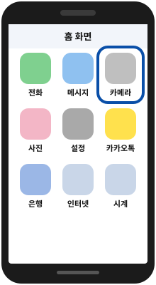
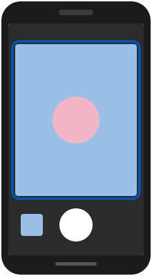
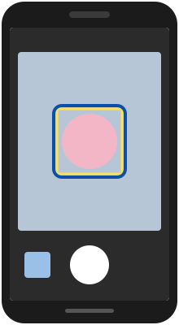
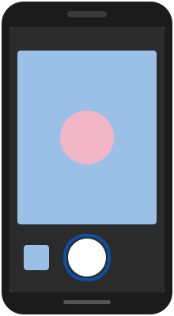
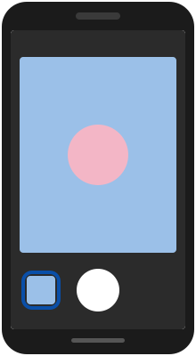

사진
휴대폰으로 사진 찍기
꽃이나 손주 모습을 선명하게 담는 기본 방법이에요.
휴대폰 종류(삼성·아이폰 등)에 따라 버튼 이름이나 위치가 조금 다를 수 있어요.
이렇게 따라 해보세요
그림 속 파란 테두리가 누를 곳이에요.
-
카메라 앱을 켜요
사진기 모양 그림의 앱을 누르세요.

-
찍을 것을 화면에 맞춰요
휴대폰을 두 손으로 잡고 화면 가운데에 찍을 것이 오게 하세요.

-
흐리면 화면을 한 번 눌러요
찍을 것을 손가락으로 한 번 누르면 그 부분이 또렷해져요.

-
큰 동그라미 버튼을 눌러요
화면 아래 가운데 하얀 동그라미가 사진 찍는 버튼이에요.

-
찍은 사진을 확인해요
왼쪽(또는 오른쪽) 아래 작은 사진을 누르면 크게 볼 수 있어요.

알아두세요
사진이 뿌옇게 나오면 휴대폰 뒷면 카메라 렌즈를 부드러운 천으로 닦아 보세요.